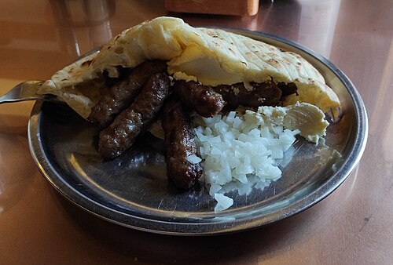

BOSNIAN BAKLAVA
Description
Bosnian Ćevapi are small, grilled minced meat sausages served with warm somun (flatbread), chopped raw onions, and a dollop of kajmak (creamy dairy spread). They are a staple of Balkan street food and a must-try for anyone exploring traditional Bosnian cuisine.
Made with a mixture of beef and lamb (or just beef), the meat is seasoned simply and grilled until juicy and charred. Ćevapi are often enjoyed wrapped in soft flatbread, making them perfect as a hearty lunch or dinner.
Ingredients
- 500g ground beef
- 250g ground lamb (optional, or use more beef)
- 3 cloves garlic, finely minced
- 1 tsp salt
- 1 tsp baking soda
- 1/2 tsp black pepper
- Flatbread (somun or pita), for serving
- Chopped raw onions, for garnish
- Kajmak or sour cream (optional)
Instructions
- In a large bowl, mix ground beef, lamb, garlic, salt, pepper, and baking soda until fully combined. Knead the meat for several minutes.
- Cover and refrigerate the mixture for at least 1 hour, preferably overnight for best flavor.
- Form small sausage-shaped logs about 3 inches long and 1 inch thick.
- Preheat a grill or grill pan over medium-high heat.
- Grill the ćevapi for about 4–5 minutes per side, or until nicely browned and cooked through.
- Serve hot with warm flatbread, chopped onions, and a spoonful of kajmak or sour cream.